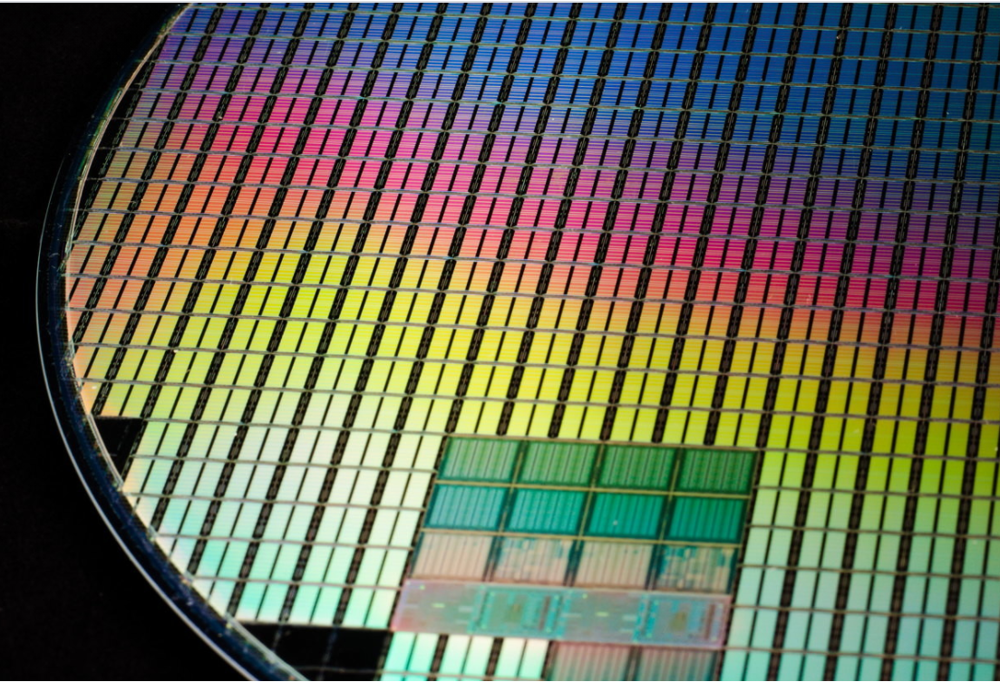
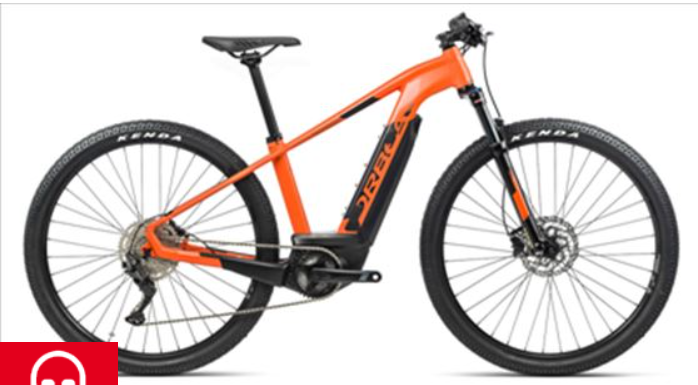

LINDA SHIRLEY ORREGO CHAVESTA
Mi Web Personal
Noticias
Transistores inversos: qué son, para qué sirven y por qué aspiran a reinventar la electrónica
El mundo de la electrónica parece abocado a experimentar un cambio con una envergadura equiparable a la del que se produjo hace algo más de setenta años, cuando los transistores irrumpieron para poner fin al reinado de las válvulas de vacío. A los fabricantes de semiconductores cada vez les cuesta más continuar mejorando su tecnología de fabricación porque cada paso que dan les acerca más al límite físico impuesto por el silicio. Pero, afortunadamente, parece que estamos rozando con la punta de los dedos la solución a este problema.
Las mejores bicicletas eléctricas
Las bicicletas eléctricas deben estar homologadas por el Ministerio de Industria, de acuerdo con la norma UNE-EN 15194:2009. En resumen: si cuentan con un acelerador similar al de las motos, si su motor supera los 250W o no se detiene la asistencia al pedaleo al alcanzar los 25 km/h, como sucede con las powered cycles o las speed ebikes. En estos casos, sería necesario matricular el vehículo, contratar un seguro y disponer de una licencia para su conducción. Para elegir una buena bicicleta, hay que tener en cuenta varios factores. Por ejemplo, la autonomía de la batería, si la batería está integrada en la bicicleta o es extraíble, la velocidad, si queremos una bicicleta de montaña, plegable o de paseo y otros detalles. Y el precio que estemos dispuestos a pagar, que varía dependiendo de los factores anteriores.